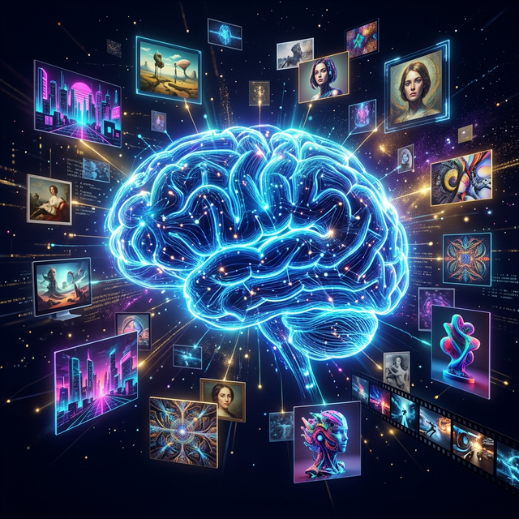
How artificial intelligence is reshaping the way we create, consume, and understand images
Visual culture encompasses everything we see — art, photography, film, advertising, social media, and the digital images that shape our daily experience.
"We are drowning in information but starving for wisdom."
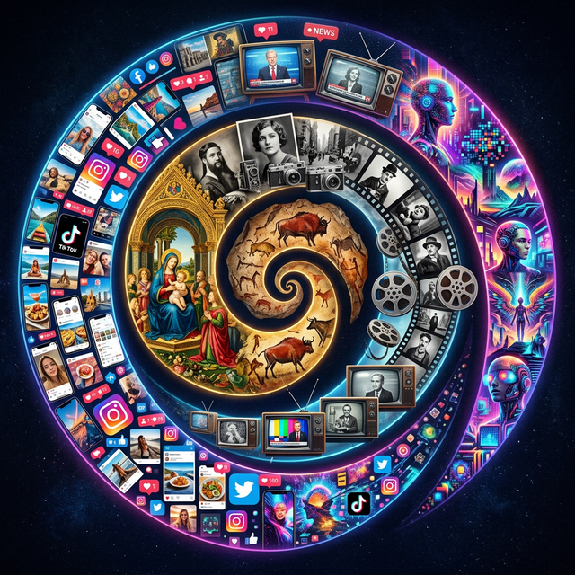
Key milestones in AI's journey to transform visual creation
Unlike humans, AI processes patterns in pixel data through layers of mathematical transformations.
The evolution from basic recognition to creative generation
AI identifies objects, faces, and scenes with superhuman accuracy
2012 – 2015AI interprets context, emotions, and meaning within visual content
2015 – 2020AI generates entirely new images, videos, and 3D content from text
2020 – PresentA new breed of tools enabling anyone to create stunning visuals with just a text prompt.
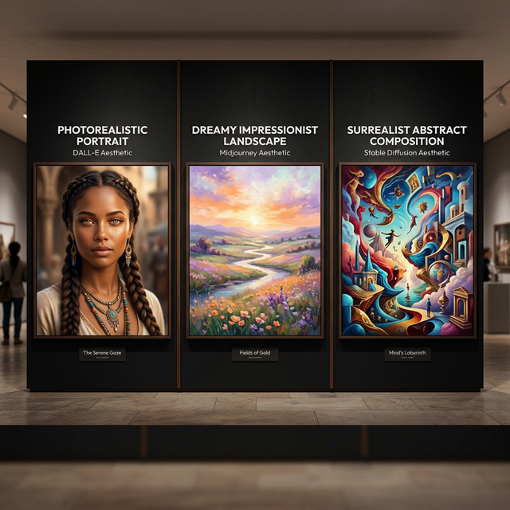
Translates natural language into original, high-quality images — from photorealistic scenes to fantasy illustrations.
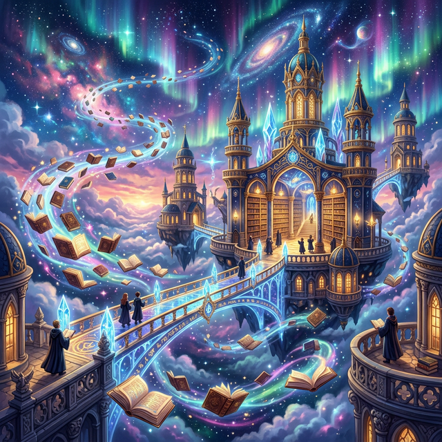
Known for stunning artistic quality, Midjourney produces visuals with exceptional painterly flair and emotional depth.
In 2022, a Midjourney piece won the Colorado State Fair digital art competition, sparking a global debate about AI and "art."
The open-source revolution in AI art. Runs locally, infinitely customizable, with a massive community.
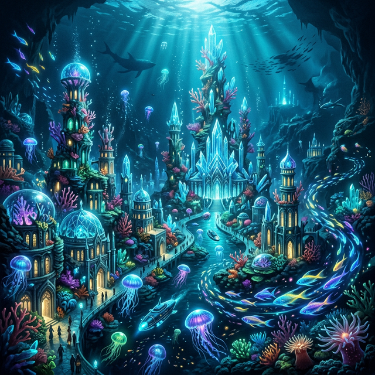
The diffusion process — from noise to masterpiece
Computerphile
Generative Adversarial Networks — two neural networks in a creative battle that produces astonishingly realistic imagery.
Creates fake images from random noise, trying to fool the discriminator
Judges whether images are real or fake, pushing the generator to improve
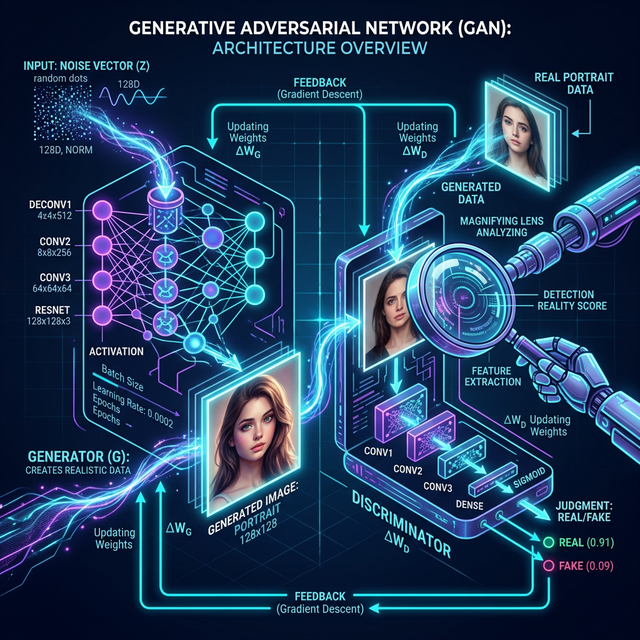
Blending the content of one image with the artistic style of another
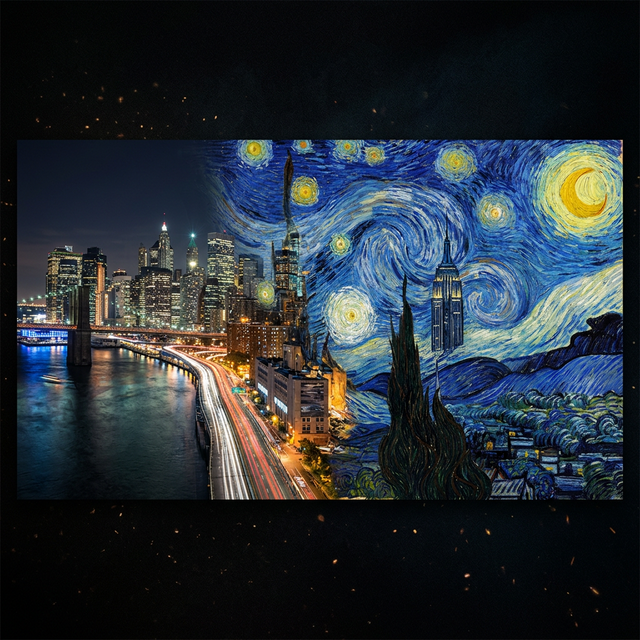
Your photo provides the structural content
Famous painting provides texture and brushstrokes
Neural network blends both into a new artwork
The next frontier — AI that creates photorealistic video from text
| Tool | Capability |
|---|---|
| Sora (OpenAI) | 60s photorealistic video from text |
| Runway Gen-3 | Real-time video editing with AI |
| Pika Labs | Image-to-video transformation |
| Kling | High-quality Chinese AI video |
| Veo 2 (Google) | Advanced physics understanding |
From capturing reality to enhancing and reimagining it
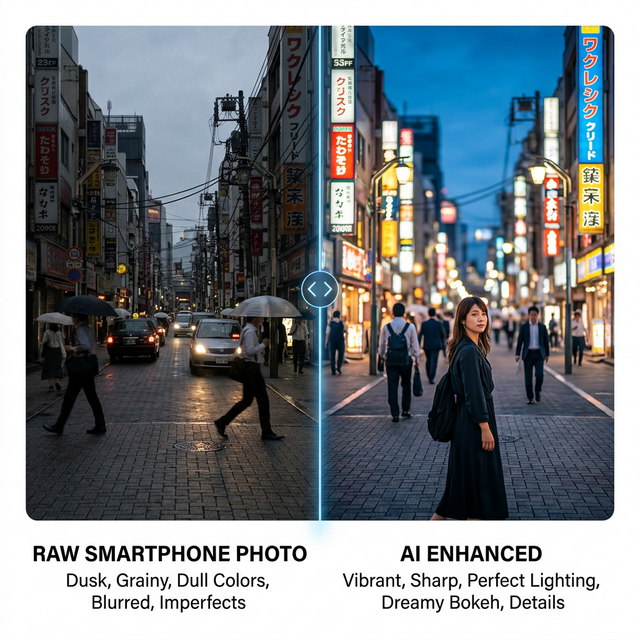
AI has unleashed a megatsunami of visual content unlike anything in history
AI-generated fake videos and images that are nearly indistinguishable from reality, posing serious threats to truth and trust.
When any image can be fabricated, how do we know what's real?
Who owns art created by AI? The legal system is scrambling to keep up.
| Region | Approach |
|---|---|
| USA | AI output not copyrightable (current ruling) |
| EU | AI Act — strict regulation & transparency |
| China | AI-generated content can be copyrighted |
| Japan | Training on copyrighted data allowed |
| UK | Computer-generated works protectable |
A spectrum of perspectives on AI's role in creative expression
"Art is not just about the output — it's about the intention, the struggle, and the human experience behind it."
Hollywood is being fundamentally reshaped by AI — from pre-production to post.
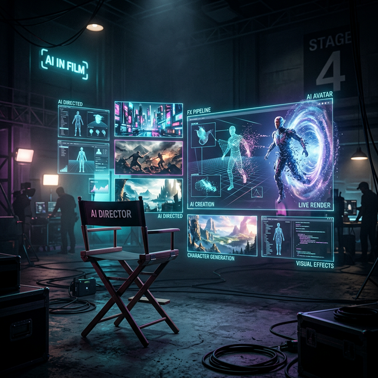
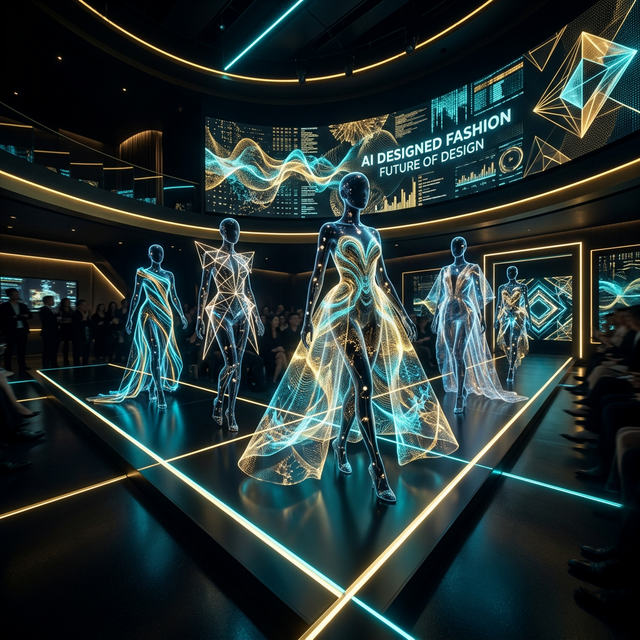
From AI-designed collections to virtual try-ons, fashion embraces AI at every stage.
AI is breaking down the barriers to visual creation — skill, cost, time, and access are no longer gatekeepers.
"AI didn't replace the artist — it gave everyone the chance to become one."
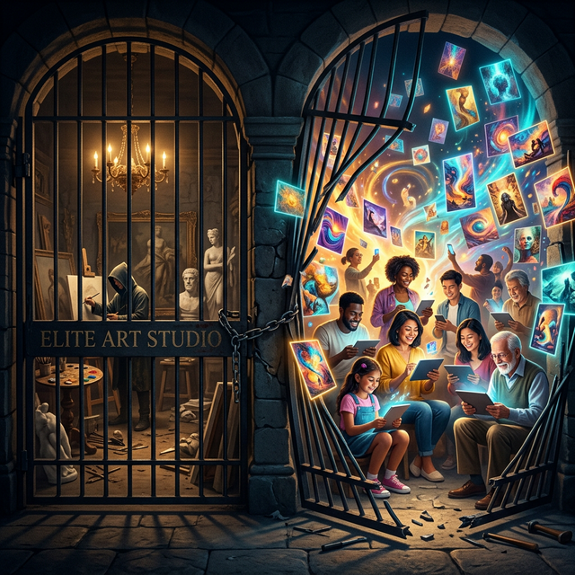
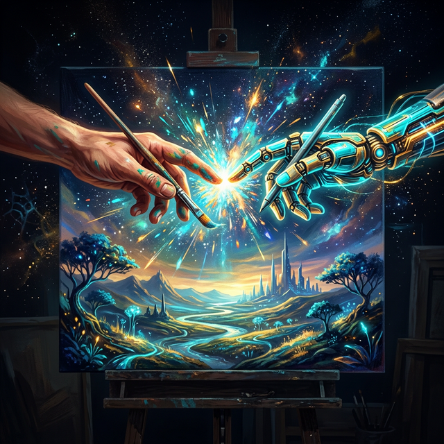
The future isn't human vs. AI — it's human + AI, each amplifying the other's strengths.
| Human Strengths | AI Strengths |
|---|---|
| Emotional depth & meaning | Speed & scale |
| Cultural context | Pattern recognition |
| Intentional storytelling | Infinite variations |
| Ethical judgment | Technical execution |
| Original imagination | Style mastery |
The transformation of visual culture is just beginning.
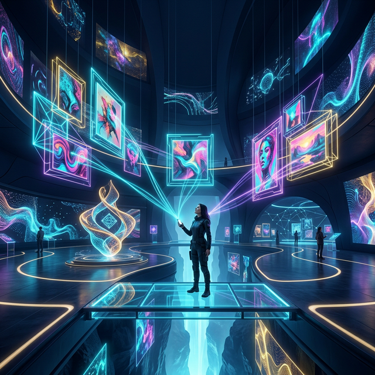
The visual world will never be the same.
The
question is: what will we create with it?